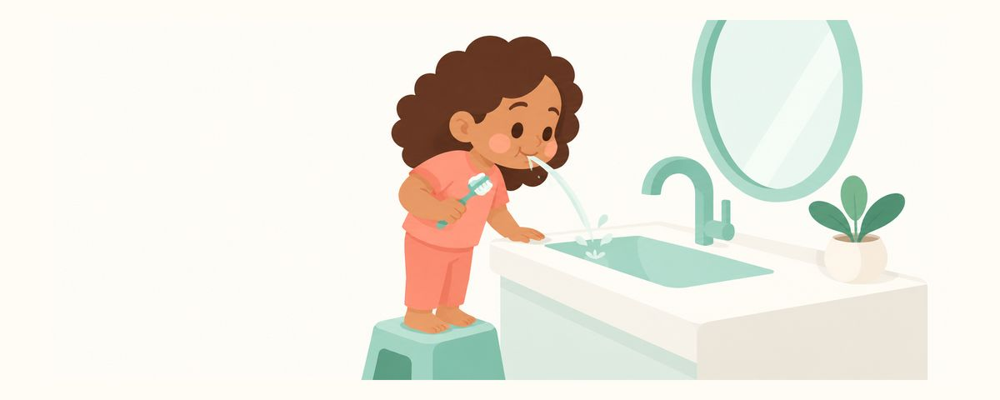

3岁起含氟牙膏用豌豆大小：练习吐牙膏，戒掉安抚奶嘴
3岁起，含氟牙膏从米粒大小增加到豌豆大小。这里整理了用量为什么要变、吐掉牙膏少漱口的诀窍、怎么选牙膏，以及戒掉安抚奶嘴和吃手指的方法。
要点速览
- 3岁起，每天两次，豌豆大小的牙膏
- 刷完吐掉，不用大量清水漱口
- 该告别安抚奶嘴和吃手指了
满3岁后，刷牙也会有一些小变化：牙膏用量变多了，孩子也到了能学着吐牙膏的年龄。一直用着的安抚奶嘴、一直吃的手指，也该慢慢告别了。这篇文章把3岁前后要调整的刷牙习惯和口腔习惯一起整理了出来。
满3岁，有什么不同
3岁起，含氟牙膏从米粒大小增加到豌豆大小。这时20颗乳牙已经长齐，要刷的面变多了，孩子也能学着把牙膏吐出来。所以要用多一点的氟来保护牙齿。
规定用量是有原因的。氟能让牙齿表面更坚固、预防蛀牙；但在恒牙发育期间吞下太多牙膏，恒牙上可能会出现白色斑纹（氟斑牙）。所以关键不是“多”，而是“用对量”。
选牙膏时，看看氟浓度。含氟牙膏要用1000 ppm以上的。不少儿童牙膏的含氟量比这低，请看一看包装上的标注。如果蛀牙风险高，也可能在咨询牙医后使用1450 ppm的牙膏。
口腔习惯也该检查一下了。3岁以后还在用安抚奶嘴或吃手指，门牙可能会被推向前方，或者上下门牙咬不到一起、中间留出缝隙。好在现在戒掉，很多时候都能恢复原位。
挤豌豆大小，练习吐掉
- 牙膏由家长来挤。孩子自己挤，很容易挤太多。牙膏放在孩子够不着的地方。
- 用豌豆大小，每天刷2次。早上和睡前各刷一次，孩子先刷，家长再补刷。
- 刷完让孩子吐掉。一开始吐不好也没关系。家长先在洗手池前示范，像玩游戏一样“呸！”地吐出来。
- 不要用清水漱好几遍。漱得太多，本该留在牙上的氟也会被冲掉。最好吐掉就结束。
吐不好的孩子，可以在刷牙以外的时间单独练习。含一小口水，再吐到洗手池里，玩几次很快就学会了。这个时期常见的一些做法也一起看看：
- 把牙膏管交给孩子，或者挤满整个刷头那么长。
- 孩子说牙膏好吃，就由着他吸牙刷。
- 刷完接满一杯水，漱好几遍。
安抚奶嘴和吃手指，可以这样告别：
- 安抚奶嘴，选好日子一次戒掉。提前跟孩子说好，比如“过完生日，我们就和安抚奶嘴说再见”，到了那天就收起来。和孩子一起跟安抚奶嘴道别，搞个小小的仪式也不错。
- 吃手指，用表扬慢慢减少。没吃手指的那天，在日历上贴一张贴纸，让孩子看到自己做得好。比起责骂，看见孩子做得好的日子更有用。
- 留意什么时候吃手指。如果困了或无聊时吃得多，就在那时换成需要动手的游戏，或者抱个睡觉用的玩偶。
常见问题
孩子总是把牙膏吞下去，没关系吗？
如果是规定用量，偶尔吞下一点不必太担心。不过如果反复吞下很多，恒牙上可能会出现白色斑纹，所以家长要控制好用量，坚持练习吐牙膏。
孩子说不漱口不舒服。
吐完后，用很少的水轻轻漱一下就好。只要不是含满一大口水漱好几遍就行。
戒掉安抚奶嘴，被推出来的门牙能恢复吗？
现在戒掉，很多时候都能恢复原位。如果习惯已经戒了，门牙还是突出，或者嘴巴不容易合上，请咨询牙医。
1450 ppm的牙膏谁都可以用吗？
这是给蛀牙风险高的孩子、在咨询牙医后使用的。即使用，量也是豌豆大小，并且要一起练习吐牙膏。
用无氟牙膏不是更安全吗？
专业学会都推荐把含氟牙膏作为预防蛀牙的基础。如果担心氟，最好的办法不是不用牙膏，而是严格控制用量。有疑问请咨询牙医。
这些情况请看牙医
- 过了3岁，还是很难戒掉安抚奶嘴或吃手指时
- 门牙前突，或者嘴巴不容易合上时
- 上下门牙咬不到一起，中间有缝隙时
- 孩子蛀牙风险高，想确定用哪种牙膏时
- 牙齿上出现白色斑纹或褐色斑点时
在合适的时候收到提醒
在牙齿日历应用中输入孩子的出生日期（或预产期），这些文章就会在需要的时候以提醒的形式送达。免费使用，无需注册。
参考来源
- AAPD · Fluoride Therapy (2023)
- AAPD · Policy on Oral Habits (2022)
本应用中的信息仅供一般科普教育之用，不能替代专业的牙科诊疗。关于孩子的具体情况，请咨询牙医。